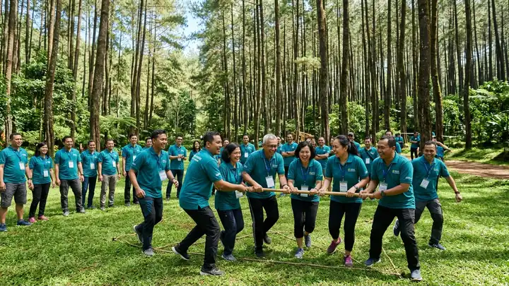
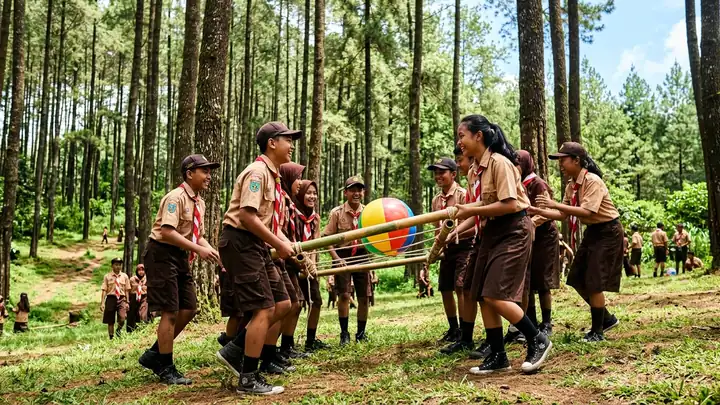
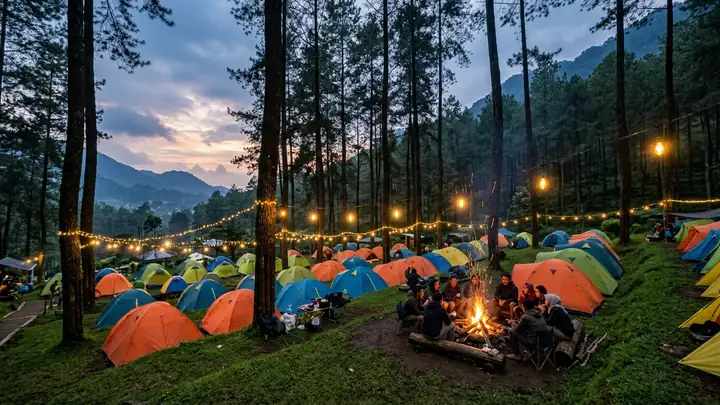
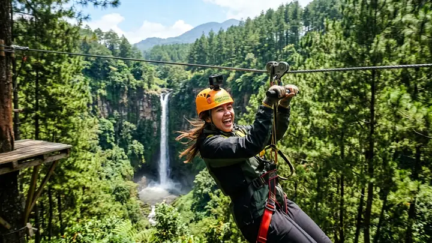
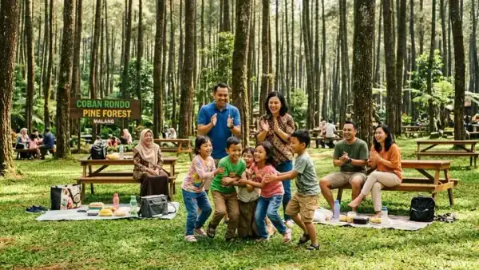

Artikel, Tips & Wawasan Petualangan
Inspirasi game ice breaking, panduan merancang gathering perusahaan efektif, hingga tips berkemah aman di alam bebas Coban Rondo.

Tips Gathering7 Langkah Menyusun Rundown Company Gathering yang Membekas & Efektif
Pelajari formula seimbang antara sesi fun games, ice breaking, team bonding, dan waktu istirahat yang efektif di alam terbuka hutan pinus Coban Rondo.

Ice Breaking10 Game Ice Breaking Lucu Tanpa Alat untuk Outbound
Kumpulan permainan pemecah kebekuan praktis yang ampuh mencairkan suasana canggung antar divisi dalam 15 menit pertama.

Camping & AlamPanduan Lengkap Camping Pemula di Hutan Pinus Coban Rondo
Simak checklist pakaian hangat, perlengkapan tidur, dan tips memilih kavling tenda terbaik di dekat air terjun.
Taktik Formasi Paintball Wargame: Kuasai Hutan Pinus
Kerja sama flanking, pembagian peran skuad, dan komunikasi tanda suara adalah kunci utama mendominasi arena wargame.

Tips Gathering5 Manfaat Nyata Outbound Team Building bagi Produktivitas Karyawan
Mengapa investasi outbound team building bukan sekadar liburan kantor biasa, melainkan pendorong utama loyalitas dan sinergi kerja tim.

Tips GatheringTips Cerdas Memilih Provider Outbound Profesional & Bersertifikat di Malang
Panduan krusial mengecek lisensi BNSP fasilitator, standar SOP keselamatan K3 alam terbuka, dan transparansi paket sebelum deal.
Siap Adakan Event Berkesan Bersama Tim?
Konsultasikan kebutuhan gathering, outbound, atau camping rombongan Anda bersama tim fasilitator profesional kami — cepat, mudah, dan transparan!
Konsultasi gratis & tanpa komitmen awal